Se encuentra en la región de la torre de Gerudo, al norte de la torre del cañón, en una montaña ubicada al oeste del santuario de Kasoh.
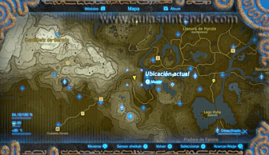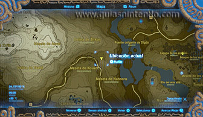
En dicho lugar te encontrarás con tres goron con los que tendrás que hablar para iniciar la Prueba heroica "Prueba de aguante", la cual consistirá en superar dos desafíos. Durante el primero de ellos tendrás que resistir un fuerte calor durante unos treinta segundos, cosa que podrás lograr protegiéndote de las altas temperaturas con vestimentas o elixires, como por ejemplo el conjunto gerudo o elixires gélidos.
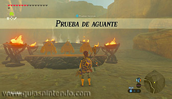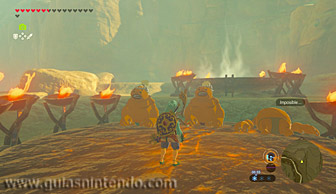
Durante el segundo desafío tendrás que resistir un fuego abrasador durante unos cincuenta segundos y sin la ayuda de vestimentas protectoras contra el fuego, cosa que podrás lograr con la ayuda de elixires ignífugos.
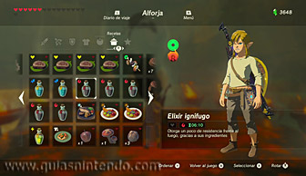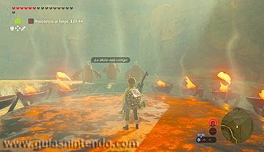
Tras completar los dos desafíos, completarás la prueba heroica y harás aparecer el santuario.
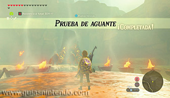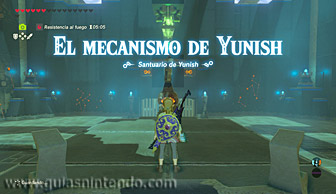
Dentro debes usar el control por movimiento del mando. Para ello, acércate al mecanismo que hay en la primera sala y muévelo inclinándolo hacia todas direcciones para mover un cubo con unos conectores en cada una de sus caras. De esa manera, podrás hacer que la electricidad del cristal que hay sobre el cubo encienda sus seis conectores, momento en el que se abrirán unas rejas que te llevarán a la siguiente sala.
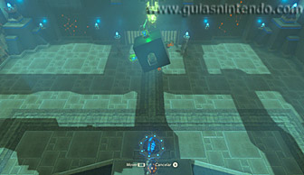
En la segunda estancia tendrás que volver a usar el control por movimiento del mando. Acércate al mecanismo que hay allí y muévelo para hacer girar un cubo con ventiladores en cuatro de sus caras. El objetivo es que dichos ventiladores hagan girar tres de los cuatro molinillos de la estancia: todos menos el que hay en la esquina inferior derecha.
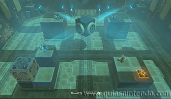
Luego sube por una rampa que hay a mano izquierda y usa la paravela para planear hacia un cofre que contiene un mandoble gerudo con la ayuda de la corriente de uno de los ventiladores del cubo (es posible que tengas que ajustar un poco la posición del cubo).
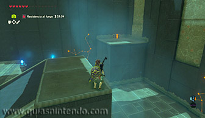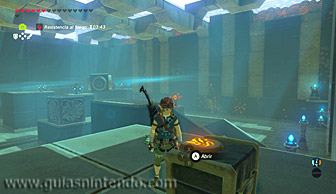
Ahora utiliza el módulo Imán para coger un cubo metálico que hay en la sala y colócalo sobre el interruptor que hay junto al molinillo que no está en movimiento (el de la esquina inferior derecha). De esa manera, harás que se eleve y que gire gracias a la corriente de uno de los ventiladores del cubo (en cambio, el molinillo de la esquina inferior izquierda descenderá y dejará de girar).
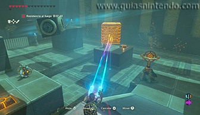
Después usa la paravela para planear hacia donde estaba el cubo metálico, lugar donde encontrarás otro interruptor que elevará el molinillo que hay a su lado. Así podrás hacer girar a los cuatro molinillos y abrir las rejas que llevan a la siguiente estancia. Pisa dicho interruptor, utiliza el módulo Paralizador para detenerlo y atraviesa las rejas antes de que se cierren.
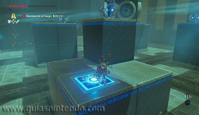
En la última estancia encontrarás un nuevo mecanismo que usará el control por movimiento del mando para mover un cubo con unas antorchas en cada una de sus caras. Sobre el cubo verás una lámpara con la que has de encender las antorchas y más arriba todavía encontrarás una plataforma de madera en la que hay un cofre. Quema dicha plataforma con una flecha de fuego para hacer caer el cofre, el cual contiene una lanza gerudo, y luego utiliza el módulo Imán para colocar el cofre abierto sobre un interruptor que hay en el suelo para hacer bajar el surtidor de agua que hay a la izquierda del cubo.
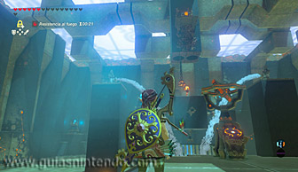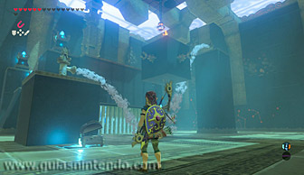
Luego acércate al mecanismo y mueve el mando para hacer girar el cubo, de manera que enciendas sus seis antorchas con el fuego de la lámpara que hay sobre el cubo (también puedes lanzar flechas de fuego a aquellas que veas que te apaga el surtidor de agua de la derecha). Al hacerlo, se abrirán unas rejas que te llevarán al altar, el cual tendrás que examinar para obtener un símbolo de valía.
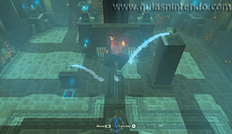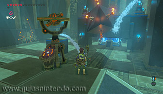